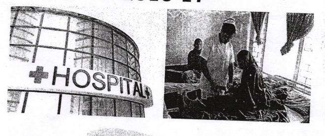

High infant mortality rate defined as number of death per 1000 live births has been a worrying issue for India. In 2016, India's infant mortality rate was 34, which is half of what it was in 2000.
The rate has gone down consitently each year, showing that the issue of healthcare has been the primary focus of each government.

Source: Ministry of Health and Family Welfare
Although the rate is going down, it is still a high number. Infant mortality rate in the United States is as low as 5.8, according to Center for Disease Control and Prevention. In comparison, India's rate is around 6 times more than the United States.
Critics and experts say that India needs to invest more in the rural healthcare system and education. An analysis of the data suggests that infant mortality rate depends on literacy and expenditure.